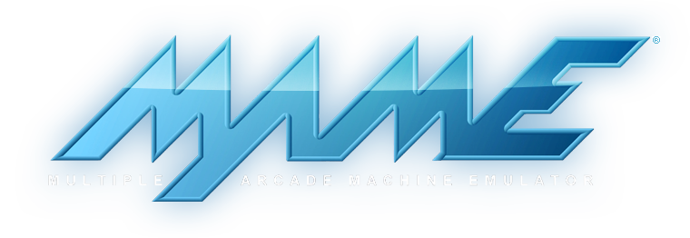
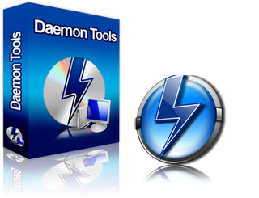

Get the best multi-emulator frontend! - Manage roms for more than 190 gaming platforms with one tool!
Easy and intuitive!
emuControlCenter is build for people who want to play games quick 'n' easy, without searching to much, ECC supports images and previews them directy in the 'Resultview'. Also there is a 'ImageCenter' build-in for a fullsize preview!
ZIP, 7-ZIP & RAR support
It's possible to load and parse roms even when they are archived with ZIP / 7-Zip / RAR. emuControlCenter can get the checksums directly without unpacking compressed files. It's also possible to parse one or more ROMs from a single ZIP / 7-ZIP / RAR-File!
Import & Export images directly from No-Intro / EmuMovies
With the build-in ‘ImageControlCenter’ it is possible to import No-Intro (CRC32 based) & EmuMovies (NAME based) images into ECC, you can also export them to these format, it’s fully configurable!
Import ROM information directly form MobyGames
Import ROM information like Developer, Publisher, Year, and Description directly from MobyGemes.com!

Play video files MP4/FLV using MPlayer
With the build-in VideoPlayer (using MPlayer) it is possible to play a videofile of the ROM you have selected, you can download these video’s directly from EmuMovies with the build-in ‘EmuMoviesDownloader’!

Advanced DATfile format
The emuControlCenter datfiles are containing informations about languages, state of the rom, developer and more. This informations could easly transfered via ecc-datfiles, it’s possible to import CM MAME & RomCenter DAT files
ECC & GTK-Theme support
It's possible to costumize how your ECC looks!, you can also select a Gtk+ 2.0 theme to improve the look even further!

Daemon tools LITE support (in use with a script)
It's possible to mount and unmout CD-Image files with Daemon tools LITE, using a script for the platform.
Translatable
ECC is translatable, so you can choose your desired language, is your language not yet supported?, please register to the forum we'll help you further!

Live! updates
With eccUpdate you can update ECC directly to the most recent version, these updates include fixes/updates/additions.
Created with the Personal Edition of HelpNDoc: Easily create CHM Help documents